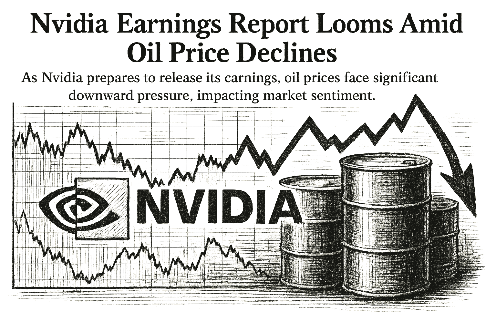

SPY
Current: $737.50Change: -12.42 (-1.66%)
Updated:
Source: yahoo_chartFreshness: fresh


As Nvidia prepares for its first earnings report since CEO Jensen Huang's exit, market volatility spikes, impacting major indices.

Today's Headline: Nvidia's Earnings Call Looms Amid Leadership Shakeup and Market Declines
Setup: As Nvidia prepares for its first earnings report since CEO Jensen Huang's exit, market volatility spikes, impacting major indices.
Primary Topic: Nvidia Earnings and Leadership Change
Specific Development: Nvidia's upcoming earnings report is highly anticipated following the abrupt departure of CEO Jensen Huang, raising questions about the company's future direction.
Why Today Is Different: The market is reacting to heightened volatility, with major indices declining sharply as investors brace for Nvidia's earnings amidst leadership uncertainty.
Secondary Topics: Market Volatility; Tech Sector Performance
Tone: cautious
Sectors: Technology
Companies: Nvidia
Countries Or Regions: United States
Macro Themes: Market Volatility; Leadership Changes
Why This Story: Nvidia's performance could significantly influence market sentiment and investor strategies, particularly in the tech sector.
Why This Matters: Nvidia Earnings Prediction Market Preview: What Will Colette Kress Say About Jensen Huang’s Exit? is the clearest current evidence-led frame for Joshua's observation-only review; missing facts remain explicit intelligence gaps.

Summary: Global markets are reacting to increased volatility, particularly in tech stocks, as Nvidia's earnings approach amidst leadership uncertainty.
What Happened Overnight: Major indices declined sharply, with tech stocks leading the downturn.
What Changed Materially: Nvidia's leadership change has heightened investor caution ahead of its earnings report.
Which Assets Sectors Are Affected: Tech sector, particularly Nvidia and related stocks.
Does It Look Like Noise Or A Real Regime Input: This appears to be a significant regime input given the leadership change and its potential implications.
Why This Matters: Joshua can use verified cross-asset moves and deterministic risk context while keeping causation explicitly unresolved.

NVDA Earnings Expectations — 2026-11-17, After Close
Consensus EPS: $2.52
Year-ago EPS: unavailable
Expected EPS growth: unavailable
Consensus revenue: $111.3B
Year-ago revenue: unavailable
Expected revenue growth: unavailable
Source: finnhub_earnings_calendar · As of: 2026-11-17T15:15:05.523472+00:00 · Freshness: current
ZIM Earnings Expectations — 2026-11-18, Before Open
Consensus EPS: $3.85
Year-ago EPS: unavailable
Expected EPS growth: unavailable
Consensus revenue: $2.5B
Year-ago revenue: unavailable
Expected revenue growth: unavailable
Source: finnhub_earnings_calendar · As of: 2026-11-17T15:15:05.523472+00:00 · Freshness: current
DELL Earnings Expectations — 2026-11-24, Time Unavailable
Consensus EPS: $6.71
Year-ago EPS: unavailable
Expected EPS growth: unavailable
Consensus revenue: $50.2B
Year-ago revenue: unavailable
Expected revenue growth: unavailable
Source: finnhub_earnings_calendar · As of: 2026-11-17T15:15:05.523472+00:00 · Freshness: current
- WOPR learning pipeline: Collecting samples
- Candidates evaluated 24h: 0
- Current gate: Evidence
- Notification ledger events in 24h: 9
- Pending orders created/canceled/filled/expired: 1/0/1/0
- Pending lifecycle interpretation: Pending-order cancellations have trackable reasons and no obvious rapid churn pattern.
- Portfolio risk: Label: High / Score: 91.8
- Latest intelligence gap report: intelligence_gap_report_2026-11-15.pdf
Why This Matters: The active gate is Evidence, so the key question is why candidates are stopping before approval, not how to force trades.
- Sentinel role: infrastructure and operational status only.
- State: ONLINE
- Last successful validation: 2026-11-17T15:17:56.052793+00:00
- Payloads accepted/rejected: 35433/253
- Node health score: 100
Why This Matters: Sentinel is ONLINE, so Joshua should use its context only to the extent the latest accepted pulse is fresh and authenticated.

CANDIDATES MOVING THROUGH JOSHUA'S INVESTMENT-REVIEW WORKFLOW
FROZEN DAILY BRIEF SNAPSHOT | 2026-11-17T15:12:51.566163+00:00
QUEUE SUMMARY | Investment Ready: 0 | Waiting for Price: 0 | Waiting for Evidence: 2 | Research Underway: 1 | Governance Hold: 6 | Monitor Only: 0
Investment-ready status: No candidates are currently Investment Ready.
#5 AVGO - Governance Hold
Joshua's Thesis: Positive thesis not yet established.
Why Waiting: Governance gate has not cleared.
Price: 338.18 now; 338.58 preferred entry
What Unlocks It: Governance gate clears; Clear valuation support; Evidence that the business quality matches the risk being taken
Portfolio Fit: 0.0/100 — VERY LOW ↓
Portfolio Fit Drivers: projected Technology exposure 66.7%; projected AI infrastructure exposure 66.7%; candidate amount $100 vs $50 currently allocated
Candidate Risk: 97.4/100 — VERY HIGH ↑
Risk Drivers: projected Technology exposure 66.7%; projected AI infrastructure exposure 66.7%; candidate amount $100 vs $50 currently allocated
Next: Re-evaluate after the recorded gate clears. Owner: Columbo.
#9 QBTS - Governance Hold [Moved Up 10->9]
Joshua's Thesis: Positive thesis not yet established.
Why Waiting: Governance gate has not cleared.
Price: 8.25 now; 17.52 preferred entry
What Unlocks It: Governance gate clears; Clear valuation support; Evidence that the business quality matches the risk being taken
Portfolio Fit: 0.0/100 — VERY LOW
Portfolio Fit Drivers: projected Unclassified exposure 83.4%; projected Unclassified exposure 83.4%; candidate amount $100 vs $50 currently allocated
Candidate Risk: 100.0/100 — VERY HIGH
Risk Drivers: projected Unclassified exposure 83.4%; projected Unclassified exposure 83.4%; candidate amount $100 vs $50 currently allocated
Next: Re-evaluate after the recorded gate clears. Owner: Joshua.
#10 NVDA - Waiting for Evidence [Moved Down 8->10]
Joshua's Thesis: Positive thesis not yet established.
Why Waiting: Positioning gate failed.
Price: 154.18 now; 213.27 preferred entry
What Unlocks It: Clear valuation support; Evidence that the business quality matches the risk being taken; Independent evidence streams pointing the same way
Portfolio Fit: 0.0/100 — VERY LOW ↓
Portfolio Fit Drivers: projected Technology exposure 66.7%; projected AI infrastructure exposure 66.7%; candidate amount $100 vs $50 currently allocated
Candidate Risk: 97.4/100 — VERY HIGH ↑
Risk Drivers: projected Technology exposure 66.7%; projected AI infrastructure exposure 66.7%; candidate amount $100 vs $50 currently allocated
Next: Positioning status must no longer be warning. Owner: Joshua.
#14 ANGX - Governance Hold [Moved Up 17->14]
Joshua's Thesis: Positive thesis not yet established.
Why Waiting: Governance gate has not cleared.
Price: 4.44 now; 4.30 preferred entry
What Unlocks It: Governance gate clears; Clear valuation support; Evidence that the business quality matches the risk being taken
Portfolio Fit: 0.0/100 — VERY LOW
Portfolio Fit Drivers: projected Unclassified exposure 83.4%; projected Unclassified exposure 83.4%; candidate amount $100 vs $50 currently allocated
Candidate Risk: 100.0/100 — VERY HIGH
Risk Drivers: projected Unclassified exposure 83.4%; projected Unclassified exposure 83.4%; candidate amount $100 vs $50 currently allocated
Next: Re-evaluate after the recorded gate clears. Owner: Advisory Committee.
#18 RCL - Governance Hold [Moved Up 19->18]
Joshua's Thesis: Positive thesis not yet established.
Why Waiting: Governance gate has not cleared.
Price: 316.65 now; 287.72 preferred entry
What Unlocks It: Governance gate clears; Clear valuation support; Evidence that the business quality matches the risk being taken
Portfolio Fit: 0.0/100 — VERY LOW
Portfolio Fit Drivers: projected Unclassified exposure 83.4%; projected Unclassified exposure 83.4%; candidate amount $100 vs $50 currently allocated
Candidate Risk: 100.0/100 — VERY HIGH
Risk Drivers: projected Unclassified exposure 83.4%; projected Unclassified exposure 83.4%; candidate amount $100 vs $50 currently allocated
Next: Re-evaluate after the recorded gate clears. Owner: Columbo.
#19 SPCX - Governance Hold [Moved Up 23->19]
Joshua's Thesis: Positive thesis not yet established.
Why Waiting: Governance gate has not cleared.
Price: 140.33 now; 148.62 preferred entry
What Unlocks It: Governance gate clears; Clear valuation support; Evidence that the business quality matches the risk being taken
Portfolio Fit: 0.0/100 — VERY LOW
Portfolio Fit Drivers: projected Unclassified exposure 83.4%; projected Unclassified exposure 83.4%; candidate amount $100 vs $50 currently allocated
Candidate Risk: 100.0/100 — VERY HIGH
Risk Drivers: projected Unclassified exposure 83.4%; projected Unclassified exposure 83.4%; candidate amount $100 vs $50 currently allocated
Next: Re-evaluate after the recorded gate clears. Owner: Advisory Committee.
#20 PLTR - Governance Hold [Moved Down 16->20]
Joshua's Thesis: Positive thesis not yet established.
Why Waiting: Governance gate has not cleared.
Price: 159.03 now; 196.14 preferred entry
What Unlocks It: Governance gate clears; Clear valuation support; Evidence that the business quality matches the risk being taken
Portfolio Fit: 0.0/100 — VERY LOW ↓
Portfolio Fit Drivers: projected Technology exposure 66.7%; projected AI software exposure 66.7%; candidate amount $100 vs $50 currently allocated
Candidate Risk: 97.4/100 — VERY HIGH ↑
Risk Drivers: projected Technology exposure 66.7%; projected AI software exposure 66.7%; candidate amount $100 vs $50 currently allocated
Next: Re-evaluate after the recorded gate clears. Owner: Columbo.
#23 IONQ - Waiting for Evidence [Moved Up 24->23]
Joshua's Thesis: Positive thesis not yet established.
Why Waiting: Evidence quality is insufficient.
Price: 25.16 now; 40.80 preferred entry
What Unlocks It: Clear valuation support; Evidence that the business quality matches the risk being taken; Independent evidence streams pointing the same way
Portfolio Fit: 0.0/100 — VERY LOW
Portfolio Fit Drivers: projected Unclassified exposure 83.4%; projected Unclassified exposure 83.4%; candidate amount $100 vs $50 currently allocated
Candidate Risk: 100.0/100 — VERY HIGH
Risk Drivers: projected Unclassified exposure 83.4%; projected Unclassified exposure 83.4%; candidate amount $100 vs $50 currently allocated
Next: Data confidence must reach at least 38/100. Owner: Joshua.
#24 DIA - Research Underway [Moved Down 18->24]
Joshua's Thesis: Positive thesis not yet established.
Why Waiting: Research evidence is still being gathered.
Price: Current price unavailable.; Preferred entry not established.
What Unlocks It: Clear valuation support; Evidence that the business quality matches the risk being taken; Independent evidence streams pointing the same way
Portfolio Fit: 0.0/100 — VERY LOW ↓
Portfolio Fit Drivers: projected ETF exposure 66.7%; projected Broad market exposure 66.7%; candidate amount $100 vs $50 currently allocated
Candidate Risk: 97.4/100 — VERY HIGH ↑
Risk Drivers: projected ETF exposure 66.7%; projected Broad market exposure 66.7%; candidate amount $100 vs $50 currently allocated
Next: Clear valuation support; Evidence that the business quality matches the risk being taken; Independent evidence streams pointing the same way. Owner: Columbo.
Observation only. This section creates no recommendation, order, authority, or execution instruction.

- Which recorded governance requirement must clear before AVGO can advance?
- Which recorded governance requirement must clear before QBTS can advance?
- If NVDA reaches the recorded price condition <= 213.27, which recorded evidence and governance requirements would still remain?
- Which recorded governance requirement must clear before ANGX can advance?
- What NVDA EPS or revenue result would materially change the current recorded thesis?

The upcoming Nvidia earnings report is pivotal, especially given the recent leadership change. Market volatility is heightened, and investor sentiment is cautious. The tech sector's performance may hinge on Nvidia's guidance and results, influencing broader market trends.

Compared to: 2026-11-16
- Market weather: Cautious -> High
- Top opportunity: Still DELL
- Joshua gate: Still Evidence
- 2Y Treasury.last_price: 4.88 -> 4.83 (down); 2Y Treasury.last_price changed 1.02% versus the prior frozen Chronicle snapshot.
- 2Y Treasury.percent_change: 0.41152263374484715 -> -1.0245901639344226 (down); 2Y Treasury.percent_change changed 348.98% versus the prior frozen Chronicle snapshot.
- 10Y Treasury.last_price: 5.15 -> 5.12 (down); 10Y Treasury.last_price changed 0.58% versus the prior frozen Chronicle snapshot.
- 10Y Treasury.percent_change: 0.9803921568627592 -> -0.5825242718446649 (down); 10Y Treasury.percent_change changed 159.42% versus the prior frozen Chronicle snapshot.
- 30Y Treasury.last_price: 5.47 -> 5.46 (down); 30Y Treasury.last_price changed 0.18% versus the prior frozen Chronicle snapshot.
- 30Y Treasury.percent_change: 0.7366482504604058 -> -0.18281535648994127 (down); 30Y Treasury.percent_change changed 124.82% versus the prior frozen Chronicle snapshot.
- SPY.last_price: 744.68 -> 737.5 (down); SPY.last_price changed 0.96% versus the prior frozen Chronicle snapshot.
- SPY.percent_change: -1.0641831298409843 -> -1.6561766588436044 (down); SPY.percent_change changed 55.63% versus the prior frozen Chronicle snapshot.
- QQQ.last_price: 665.18 -> 660.06 (down); QQQ.last_price changed 0.77% versus the prior frozen Chronicle snapshot.
- QQQ.percent_change: -2.0858173253845695 -> -2.178552374177492 (down); QQQ.percent_change changed 4.45% versus the prior frozen Chronicle snapshot.
- IWM.last_price: 274.49 -> 271.57 (down); IWM.last_price changed 1.06% versus the prior frozen Chronicle snapshot.
- IWM.percent_change: -2.8388375632720906 -> -3.2112053603250383 (down); IWM.percent_change changed 13.12% versus the prior frozen Chronicle snapshot.
The leadership change at Nvidia and its potential impact on earnings has increased market volatility, prompting a reassessment of risk in tech investments.
Yesterday's warnings about market volatility and the impact of Nvidia's leadership change remain relevant as market conditions have worsened.
Portfolio Construction Review
Current allocation: 50.06 allocated.
Largest sector: Unclassified at 50.1%.
Largest theme: Unclassified at 50.1%.
Diversification: Mixed (49.9).
Cash allocation: 95.0% unallocated.
Recommended exposure: DELL at portfolio-fit score 0.0.
Portfolio fit: DELL has strong standalone evidence, but it increases portfolio concentration.
Why This Matters: Portfolio Manager evaluates whether an opportunity improves this portfolio; it does not select the investment, vote, or authorize execution.

Today, the evidence gate matters more than the ticker list; Evidence is where Joshua's attention belongs.

| Can trigger trade | no |
| Can modify trade rules | no |
| Can add watch items | yes |
| Can add review questions | yes |
| Can adjust confidence notes | yes |
| Input policy | external_intelligence_plus_sanitized_internal_observations |
| External policy | The Editor-in-Chief synthesizes current world/market context where available and labels unknowns; provider/model provenance remains separate. |
| Internal policy | Joshua/WOPR/Sentinel facts are supplied as sanitized observation-only summaries. |
| Editorial model | gpt-4o-mini |
- Selected by a deterministic daily rotation through symbols already present in the persisted Chronicle snapshot.
- Related event on the canonical wire: FedEx Stock And Other Fuel Cost Winners If Oil Prices Stay Low
- From Nvidia's C-Suite Turmoil To Walmart Vs. Target: What To Watch In This Week's Earnings
- Desk: earnings; source: SeekingAlpha; linked symbols: NVDA.
- Published: 11/16/26 21:26 MST.
- High-impact watch: FOMC Minutes Meeting of October 27-28 - 11/18/26 12:00 MST.
- Affected assets: US equities, Treasuries, USD; source: federal_reserve_calendar.
- NVDA earnings: November 17, 2026, after close.
- ZIM earnings: November 18, 2026, before open.
- DELL earnings: November 24, 2026, time unknown.
- Energy: 2.88% session performance; source: persisted sector ledger.
- Consumer Staples: 1.58% session performance; source: persisted sector ledger.
- Utilities: 0.45% session performance; source: persisted sector ledger.
- ETHUSD: -6.56% recorded move; price: 1801.18.
- Session: 24h; catalyst status: no_verified_catalyst; source: yahoo_chart.
- Market volatility indicators; why it matters: Understanding volatility can help gauge market sentiment and potential risks.
- State: weakening; score: 43.40/100; advance/decline ratio: 0.40.
- Above 50-day average: 67.20%; sample: 119; provider: sentinel_sampled_breadth.
- Decision outcomes evaluated: 16; currently untestable: 0.
- Warning review: still watching 1, unknown 2; confidence calibration: insufficient_sample.
- Current macro regime: defensive_rotation; change probability: unavailable.
- Risk dashboard: elevated (75/100); breadth: weakening; sentiment: cautious.
- Scenario board only - a current-state observation, not a forecast or execution instruction.

- Founded Bridgewater Associates and popularized systematic macro analysis, risk parity, and explicit decision principles.
- Published quotation: "He who lives by the crystal ball will eat shattered glass."
- Published framework: Translate economic cause-and-effect relationships into explicit rules, diversify across independent return drivers, balance rather than merely add risk, and stress-test decisions against different environments.
- Committee lens: Dalio asks Joshua to model the system, diversify evidence and exposures, and test a proposal across inflation, growth, liquidity, and policy regimes.
- Public philosophy profile only; no participation, endorsement, or current recommendation is implied.
- If NVDA reaches the recorded price condition <= 213.27, which recorded evidence and governance requirements would still remain?
- DELL: No canonical symbol-specific material event is linked.
- Attach the missing DELL evidence before the next committee review.
- Define evidence that would confirm or retire each unresolved warning before the next review window.
- Which recorded governance requirement must clear before AVGO can advance?
- Which recorded governance requirement must clear before QBTS can advance?
- If NVDA reaches the recorded price condition <= 213.27, which recorded evidence and governance requirements would still remain?
- Which recorded governance requirement must clear before ANGX can advance?
- Evidence agenda: DELL - No canonical symbol-specific material event is linked.
- Proposed review: Nvidia's stock performance post-CEO ousting; why it matters: A significant leadership change can influence investor confidence and stock valuation.
- Proposed review: Oil price trends; why it matters: Rising oil prices can affect inflation and economic growth, impacting market strategies.
- Canonical instruments reviewed: 24; delayed 6, fresh 18.
- Leading sources: yahoo_chart (21), treasury_official_yield_curve (3).
- Snapshot recorded: 11/17/26 08:15 MST.
Nvidia's Earnings Call Looms Amid Leadership Shakeup and Market Declines
Storm meter: Elevated
#5 AVGO - Governance Hold
Observation mode: observation_only
Watch: Nvidia's stock performance post-CEO ousting; why it matters: A significant leadership change can influence investor confidence and stock valuation.
Question: Which recorded governance requirement must clear before AVGO can advance?